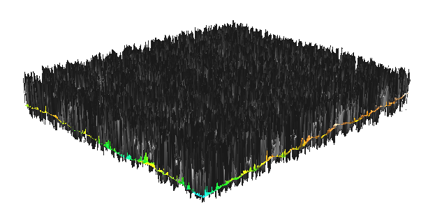

FAQs
Using GRASS GIS
- When I open GRASS,
nc_spm_08_grass7 doesn't show up under "Project Locations",
although it is downloaded and unzipped on my computer.
-
Make sure that when you unzip your
nc_spm_08_grass7 is not hidden under another nc_spm_08_grass7.
Some zip software tools create an extra directory by default, so you need to specify
that you do not want a new directory created.
Your directory structure should look something like:
C:\Users\username\Documents\grassdata\nc_spm_08_grass7\PERMANENT
- How do I run the commands in GUI?
-
You can copy and paste the commands into Layer Manager command console and press Enter to execute.
Copy and execute each command separately one after each other.
Alternatively, you can use the module dialogs, you can find the modules in Modules tab,
or menu, or you can type the module name in command console.
See documentation how to use module dialogs.
- When I run GRASS command for the second time, it gives me an error?
ERROR: option <aspect> <aspect> exists. To overwrite, use the --overwrite flag
-
You probably already created the raster or vector maps by the first run
and now GRASS doesn't want you to overwrite the already created data.
Give your output a new name or you can force overwrite by adding
--o to your command
(this applies to practically all GRASS commands). There is an equivalent overwrite
checkbox in each module's GUI.
- Is there a way to reorder the layers?
- yes - just grab a layer with the mouse and move it where you want it to be.
- Image rendering in GRASS GIS is slow.
-
Do not keep large number of layers in the Layer Manager, start each assignment
with empty list and if you accumulate many layers, remove those that you don't need.
- Can I use data with different projections at the same time?
-
GRASS GIS manages integrity of the data by allowing to work with data in
one projection at the time (i.e. it considers on-the-fly projection as
such a bad practice, that it doesn't allow it at all) and it also
requires you to import the data, to have all the data in one format,
e.g. to store vector data in GRASS topological format.
- The image I see in 3D in GRASS GIS is just a lot of spikes or outliers, no digital elevation model.

-
When visualizing rasters in GRASS GIS 3D view, you have to switch off
aspect and any other raster map layers which you don't want to show as surface.
You can however, show any raster by draping it over a
surface in 3D (by selecting method of coloring for a surface).
For example, to show aspect draped over elevation, you have to have
elevation layer in Layer Manager (not aspect layer), and in 3D view properties,
select aspect layer as color.
- When I show the raster map in GRASS GIS 3D view as a surface,
I cannot see much detail and the view seems not precise, coarse or blurry.
- Set fine mode resolution in 3D view tab, in the Surface part to 1
to get the surface in the actual (full, native) resolution of the raster.
- What does the fine mode resolution in GRASS GIS 3D mean?
- Fine mode resolution in 3D is resolution of resampling when using
the raster in 3D, for example fine mode resolution 2 means that raster
with resolution 3 is shown as if it would have resolution 6.
This is for performance purposes. To see raster in its full (native)
resolution, use fine mode resolution 1.
- I cannot change or create data in my other Mapsets, only in the current one.
-
That's how it should be. GRASS GIS is always connected to
one GRASS Location inside a GRASS Database. GRASS Location contains
multiple GRASS Mapsets and you can access data in any of these Mapsets.
However, you can change (create, modify, delete) the data only in a
current Mapset. Data can be copied into current Mapset using
g.copy if you need to modify them (e.g. attributes of a vector map).
By default, you see data only in the current Mapset and in the
PERMANENT Mapset (that's the special thing about PERMANENT Mapset).
Use Data tab in Layer Manager to manage your data, you can "unlock"
the functionality to be able to change data outside of your current mapset.
- When using GRASS GIS, can I access data in different Mapset or Location?
-
If desired, you can show data from other Mapsets (in the current
Location) using Settings > GRASS working environment > Mapset access.
This helps to maintain safety of data and gives a system to organize
the data. Data in other Locations are accessible only if you start
GRASS session in the Location. Accessing data from multiple Location
wouldn't be safe because data in different Locations are (can be) in
different coordinate systems (while all Mapsets in one Location
contains data in one particular coordinate system).
- What is happening when (computational) region is set?
-
It sets the spatial extent AND resolution at which all raster operations are done.
If any of the rasters has different resolution, it is quietly resampled using nearest neighbor.
It also sets the viewing area of the Map Display
when the option Zoom into computational region is selected.
It does not affect vector operations, so vector data need to be clipped if the operation
is to be performed on a subset of the data.
However, some vector modules can work with the region when it is advantageous
or when rasters are involved.
Geospatial data introduction
- Should we list and provide information about all the files
in each Location and geodatabase, or a subset?
-
Rather than listing
properties for each file you should provide a general description
that will characterize the data. For example,
after looking at most of the data in the data set, are you able to generalize some
common properties? are all the data local? regional? do they have all same level of detail?
do they represent natural or anthropogenic features? how are they georeferenced?
The goal in this assignment is to ensure that the students understand the basic properties
of digital geospatial data and can make general observations and conclusions based
on broad range of specific technical information.
The reports will get more meaningful for more complex
assignments - the first ones are just a warm up.
In the approach section - do not write about software issues, focus on general methodology,
in the results sections focus on what is interesting in the data and the derived maps.
Put software issues, including fixes and suggestions for improvements into
the discussion section.
- data were in ... geographic coordinate system
- there are no data in geographic coordinate system in the provided data set - everything is
in State Plane coordinate system (datum:NAD83, projection:LCC)
- Why there is no space after comma in
g.copy raster=slope,myslope?
-
The comma syntax (as in
to,from) is used in GRASS GIS a
lot, so you should remember not to put space after comma in this case.
Basically, the reason is that the same syntax is usable in command line
where the space would have a meaning. Generally speaking, GRASS GIS is
aiming at being easily used when scripting or programming in different
languages, so this requires to be strict sometimes. Similarly,
ArcGIS raster map calculator, it requires spaces here and there,
e.g. around operators. On the other hand, GRASS GIS raster map calculator
does not require spaces because there is just no advantage in requiring them.
However they are considered as a good practice
when used around operators and after comma.
Geospatial data models, display and visualization
- How do I approach the Methodology sections while working with two different
software packages, yet remaining “software independent?”
-
In your methods section you should write your general, software independent methods:
For example: We have compared methods for resampling raster data to higher and lower resolution,
highlighting the difference between methods used for continuous and discrete data.
We have resampled a 30m resolution DEM to 10m resolution DEM using nearest neighbor,
bilinear and bicubic methods (here you can add equations or references to literature for extra points).
Then we have used aspect derived from the resampled 10m DEMs to highlight the differences between the methods.
In the results you then show the outputs from GRASS and ArcGIS and comment on what you have observed,
e.g. :The nearest neighbor method resampling of DEMs has resulted in discontinuous checkerboard pattern
observed in both the ArcGIS and GRASS output, while both bicubic and bilinear methods preserved
the continuity of the DEM surface. It is important to note that the differences were not visible
in the elevation display but appeared in the derived aspect (and 3D representation if you chose to use it).
You can try to explain what is causing the differences between the nn and bilinear methods.
- I'm not sure what setting the grid parameters "size=0:02" did.
-
It draws the lat/long grid - you should read the numbers along the image broder to find out.
Maps used to provide both x/y grid in meters and lat/long in degrees:min:sec so that
both cartesian and geographic coordinates could be derived.
- What is the ArcGIS equivalent to setting the computational region in GRASS GIS?
- rather than clipping the data set,
which would be a pain if you need to use many data sets with different
spatial extent and if you need to work on different regions (you would be
also creating a lot of extra files) is under:
Environments > General Settings > Extent
- Why we just don't use very high resolution for all raster data?
-
When you have low resolution (big cells) it does not necessary mean
that it is worse. Sometimes we can even rescale hight resolution data
because we don't need the precision because other data for analysis are
in the lower resolution or because we are hitting some storage limits.
Re-scaling to higher resolution (smaller cells) does not give use more
precise information, although the image might be smoother. Similarly,
when comparing raster and vector, it is important to realize that there
both has limited (spatial, yx) precision and although the area boundary
in vector looks nicer it might be much less accurate then the raster
representation depending on how the data were acquired.
- GRASS GIS Map Display is not using my system default font.
Is there any way to change it?
- You can change the default font used in Map Display by going to
the main menu > Settings > Preferences > Map Display tab and click Set font
button. Select name of any font you like.
- The maps composed in GRASS GIS Map Display are not good enough for me.
Is there something else I can use?
-
Advanced cartography in GRASS GIS is done in completely separate
application/module called GRASS GIS Cartographic Composer
(which is a GUI frontend for ps.map module). However, some
users stay just with the GRASS GIS Map Display
because it is easily scriptable thanks to display modules (d.*)
or they combine it with Inkscape.
Some other GRASS GIS users, however, use QGIS for
high-quality cartography tasks.
Global, zonal and focal operations, map algebra
- What does the difference between SRTM and NED DEMs mean?
-
SRTM represents surface with vegetation and buildings, while NED is derived from bare earth lidar data,
so it is lower in most areas. The issue is complicated by the fact, that in SRTM v1
surface water was assigned value 0 instead of NULL or actual value (there were no data),
so lakes have the elevation value 0 leading the large negative difference. Both DEMs are properly
georeferenced to the same vertical datum.
- What is happening in the map algebra example with relative coordinates?
-
South-east corner is replaced.
- How we got from the computer raster to the plane? How would I use it?
-
We are computing an equation for a plane here:
ax+by+cz+d=0 which we can rewrite as
z = -1/c (ax + by) - d/c
and use it to model, for example, a geologic fault.
- NDVI computed with integers gives 0 in GRASS and -1, 0 in ArcGIS, what is going on?
-
The correct values for NDVI range between (-0.957, 0.979) so
when the decimals are simply cut-off the result is 0, when the numbers are rounded down to nearest
integer the result will be -1,0. Neither of them is correct.
- Subsetting a raster using map algebra - what is happening there?
-
We set the spatial extent to orthophoto and resolution to 10m (that means that the 1m resolution
of ortho is ignored). Then we compute a new raster by assigning it the same values
as in the original raster only within the defined spatial extent. So the resulting
map has the spatial extent of the orthophoto but the values and resolution are the same as in
the original raster.
Buffers, cost surfaces, least cost path
- Can I manually set region by drawing a rectangle on the map in display window?
-
Yes, find toolbar button 'Various zoom options' on Map Display toolbar,
select 'Set computational region extent interactively' and then draw the rectangle.
- Coordinates of firestations are not stored in the attribute table. Where do they come from?
-
v.out.ascii pulls them from the coor file that defines the geometry of each vector map
and combines them with attributes from the SQLite table (or any other DBMS that you may use -
GRASS supports several).
- What are the friction values?
-
These are empirically selected values that measure how difficult it is to walk
through cells with different types of cover, they increase the cost to pass a grid cell.
- What is the best way to get the min and max raster value in GRASS?
-
Use
r.info -r.
- In GRASS I don't get any firestations for the given condition CVLAG < 0.1,
I had to use CVLAG < 0.5 and the stations that I got were far away
(S. East St. and W main St stations)
-
you may be searching in a wrong region, reset it with
g.region swwake_30m -p
Terrain modeling
- Is 2m or 6m resolution more suitable for DEM from the given lidar data?
-
If we are going to generate the DEM using binning, e.g. mean elevation for each cell,
6m provides more complete coverage, but as the range map shows we lose some detail.
2m resolution is not suitable for generating DEM by binning - the data are not dense enough.
But if we interpolate (computationally more intensive task than binning)
we will get a more detailed DEM.
- When I show the TIN in GRASS GIS 3D view, I get just large spheres or flat thick plate.
How to view the 3D TIN.
-
When visualizing vectors in GRASS GIS 3D view,
go through a Vector section of the Data tab and
check values of all the fields. In case of TIN, you probably don't want
to show any points or set the size of points to a small number.
Note also that depending on vector type, you need to specify if you want
to show the features on an existing raster surface (flat plane by default)
or as actual 3D features.
Switching off other layers beforehand in 2D is also a good idea.
Spatial interpolation and approximation
- How to design an experiment to test IDW with different parameters?
-
Run the command with the suggested parameters, you should vary only one parameter at a time,
keep the other constant to not mix up the effects of both parameters.
Then compare the results
visually and statistically using shaded relief (hillshade), contours, univariate statistics
and histograms. For example, you should be able to conclude that the lower
the number of points, the rougher the surface
The univariate statistics shows almost no difference
illustrating the fact that summary statistics does not reveal subtle but
significant differences in surface geometry.
Spatial interpolation and approximation: splines
- GRASS defines spline method as regularized spline with tension,
while ArcGIS defines spline method with two functions, regularized and tension.
It seems the functions from these two software are different when both state
it is a spline interpolation method.
-
There are many different spline interpolation methods based on what type
of smoothness seminorm (also called roughness penalty) they minimize, see
Table 1 in this paper
(this paper has lot of typos as we were not given the proofs after the chapter was typeset,
but it has a good overview of interpolation methods,
note that in Table 1 regular should be regularized, and the spline by Hutchinson in Topo to grid
is thin plate spline with tension, not just thin plate spline).
Regularized spline with tension is equivalent
to completely regularized spline but the others are different.
- Another confusion I have is radial basis functions.
Radial basis function methods are part of spline method?
Or some are spline (thin-plate spline, spline with tension,
and completely regularized spline), and some are not?
-
Splines are a special type of radial basis function methods, multiquadrics is another group RBF methods.
But there are also splines that are smoothly connected piecewise polynomials
that we have not covered at all (they are applied to meshes which are not very well supported in GIS).
- And does spline with tension under radial basis functions create
the same results from spline interpolation with tension type?
-
Spline with tension under radial basis functions and the one in Spatial Analyst are probably
based on the same equations but the implementation may be different
so unless it calls the same code, the results will be different
( e.g. the data are usually normalized to avoid numerical problems
and each program does it differently, and the search for points may be different too - we
covered that in the lecture.)
Spatial and Temporal Terrain analysis
- In the time series analysis task my surfaces are fuzzy and the cutting plane does not work.
-
Make sure you set display to computational region and use fine resolution=1 in nviz.
When using cutting planes both surfaces should have their resolution set to same value (e.g. fine=1),
use constant plane for reference (-1m for the coast) and set its resolution to fine=1 too.
When comparing two surfaces assign each of them different constant color
and use top or bottom surface option to color the cutting plane. You can lower your light source
and reduce its brightness to create contrast between the cross-section and the surface if you
are coloring the cross-section using the top surface option.